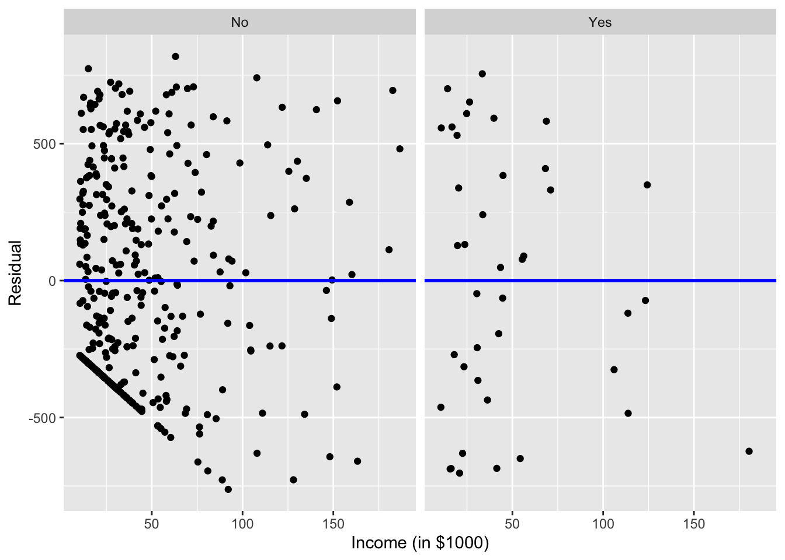
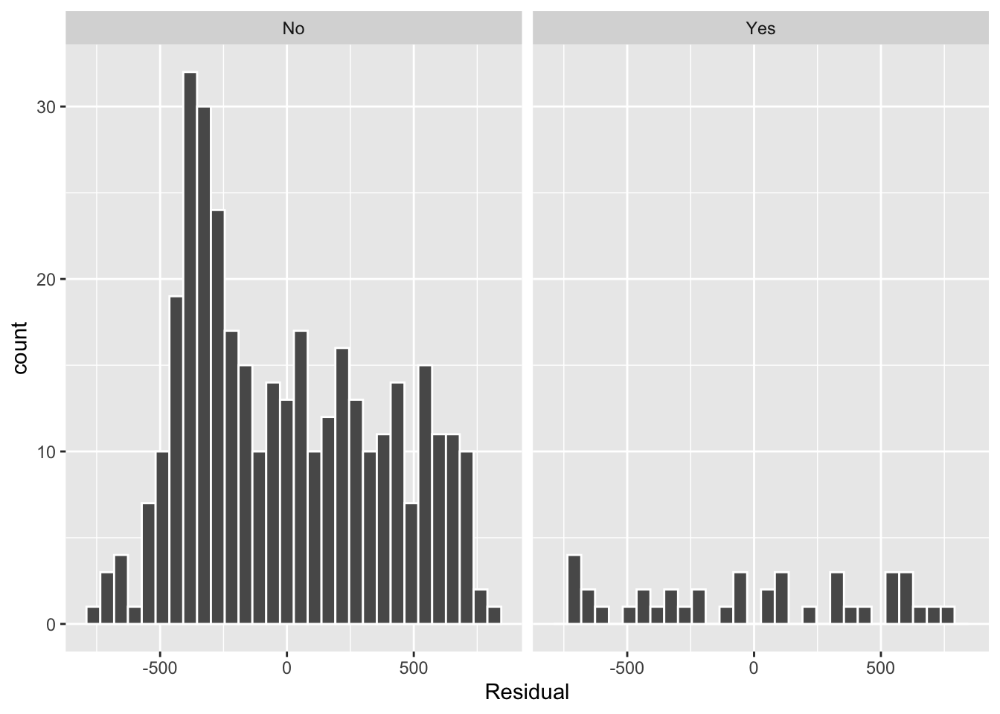

evals_multiple <- evals %>%
select(score, gender, age)
par.model <- linear_reg()
par.model <- par.model |>
fit(score ~ age + gender, data = evals_multiple) |>
extract_fit_engine()Week 4 Tasks Solutions
Tasks
- Assess the model assumptions for the parallel regression lines model. Do they appear valid?
Solution
regression.points <- get_regression_points(par.model)
ggplot(regression.points, aes(x = age, y = residual)) +
geom_point() +
labs(x = "age", y = "Residual") +
geom_hline(yintercept = 0, col = "blue", linewidth = 1) +
facet_wrap(~ gender)
ggplot(regression.points, aes(x = score_hat, y = residual)) +
geom_point() +
labs(x = "Fitted values", y = "Residual") +
geom_hline(yintercept = 0, col = "blue", linewidth = 1) +
facet_wrap(~ gender)
ggplot(regression.points, aes(x = residual)) +
geom_histogram(binwidth = 0.25, color = "white") +
labs(x = "Residual") +
facet_wrap(~gender)
- Return to the
Creditdata set and fit a multiple regression model withBalanceas the outcome variable, andIncomeandAgeas the explanatory variables, respectively. Assess the assumptions of the multiple regression model.
Solution
Cred <- Credit |>
select(Balance, Income, Age)
Cred |>
skim()| Name | Cred |
| Number of rows | 400 |
| Number of columns | 3 |
| _______________________ | |
| Column type frequency: | |
| numeric | 3 |
| ________________________ | |
| Group variables | None |
Variable type: numeric
| skim_variable | n_missing | complete_rate | mean | sd | p0 | p25 | p50 | p75 | p100 | hist |
|---|---|---|---|---|---|---|---|---|---|---|
| Balance | 0 | 1 | 520.02 | 459.76 | 0.00 | 68.75 | 459.50 | 863.00 | 1999.00 | ▇▅▃▂▁ |
| Income | 0 | 1 | 45.22 | 35.24 | 10.35 | 21.01 | 33.12 | 57.47 | 186.63 | ▇▂▁▁▁ |
| Age | 0 | 1 | 55.67 | 17.25 | 23.00 | 41.75 | 56.00 | 70.00 | 98.00 | ▆▇▇▇▁ |
Cred |>
cor() Balance Income Age
Balance 1.000000000 0.4636565 0.001835119
Income 0.463656457 1.0000000 0.175338403
Age 0.001835119 0.1753384 1.000000000ggplot(Cred, aes(x = Age, y = Balance)) +
geom_point() +
labs(x = "Age (in years)", y = "Credit card balance (in $)",
title = "Relationship between balance and age") +
geom_smooth(method = "lm", se = FALSE)`geom_smooth()` using formula = 'y ~ x'
# plot_ly(Cred, x = ~Income, y = ~Age, z = ~Balance,
# type = "scatter3d", mode = "markers")
Balance.model <- linear_reg()
Balance.model <- Balance.model |>
fit(Balance ~ Age + Income, data = Cred) |>
extract_fit_engine()
get_regression_table(Balance.model)# A tibble: 3 × 7
term estimate std_error statistic p_value lower_ci upper_ci
<chr> <dbl> <dbl> <dbl> <dbl> <dbl> <dbl>
1 intercept 360. 70.4 5.11 0 221. 498.
2 Age -2.18 1.20 -1.82 0.069 -4.54 0.172
3 Income 6.24 0.587 10.6 0 5.08 7.39 regression.points <- get_regression_points(Balance.model)
ggplot(regression.points, aes(x = Income, y = residual)) +
geom_point() +
labs(x = "Income (in $1000)", y = "Residual", title = "Residuals vs income") +
geom_hline(yintercept = 0, col = "blue", linewidth = 1)
ggplot(regression.points, aes(x = Age, y = residual)) +
geom_point() +
labs(x = "Age (in years)", y = "Residual", title = "Residuals vs age") +
geom_hline(yintercept = 0, col = "blue", linewidth = 1)
ggplot(regression.points, aes(x = residual)) +
geom_histogram(color = "white") +
labs(x = "Residual")`stat_bin()` using `bins = 30`. Pick better value with `binwidth`.
- Return to the
Creditdata set and fit a parallel regression lines model withBalanceas the outcome variable, andIncomeandStudentas the explanatory variables, respectively. Assess the assumptions of the fitted model.
Solution
Cred <- Credit |>
select(Balance, Income, Student)
Cred |>
skim()| Name | Cred |
| Number of rows | 400 |
| Number of columns | 3 |
| _______________________ | |
| Column type frequency: | |
| factor | 1 |
| numeric | 2 |
| ________________________ | |
| Group variables | None |
Variable type: factor
| skim_variable | n_missing | complete_rate | ordered | n_unique | top_counts |
|---|---|---|---|---|---|
| Student | 0 | 1 | FALSE | 2 | No: 360, Yes: 40 |
Variable type: numeric
| skim_variable | n_missing | complete_rate | mean | sd | p0 | p25 | p50 | p75 | p100 | hist |
|---|---|---|---|---|---|---|---|---|---|---|
| Balance | 0 | 1 | 520.02 | 459.76 | 0.00 | 68.75 | 459.50 | 863.00 | 1999.00 | ▇▅▃▂▁ |
| Income | 0 | 1 | 45.22 | 35.24 | 10.35 | 21.01 | 33.12 | 57.47 | 186.63 | ▇▂▁▁▁ |
ggplot(Cred, aes(x = Income, y = Balance, color = Student)) +
geom_jitter() +
labs(x = "Income (in $1000)", y = "Credit card balance (in $)", color = "Student") +
geom_smooth(method = "lm", se = FALSE)`geom_smooth()` using formula = 'y ~ x'
par.model <- linear_reg()
par.model <- par.model |>
fit(Balance ~ Income + Student, data = Cred) |>
extract_fit_engine()
get_regression_table(par.model)# A tibble: 3 × 7
term estimate std_error statistic p_value lower_ci upper_ci
<chr> <dbl> <dbl> <dbl> <dbl> <dbl> <dbl>
1 intercept 211. 32.5 6.50 0 147. 275.
2 Income 5.98 0.557 10.8 0 4.89 7.08
3 Student: Yes 383. 65.3 5.86 0 254. 511. regression.points <- get_regression_points(par.model)
ggplot(regression.points, aes(x = Income, y = residual)) +
geom_point() +
labs(x = "Income (in $1000)", y = "Residual") +
geom_hline(yintercept = 0, col = "blue", linewidth = 1) +
facet_wrap(~ Student)
ggplot(regression.points, aes(x = Balance_hat, y = residual)) +
geom_point() +
labs(x = "Fitted values", y = "Residual") +
geom_hline(yintercept = 0, col = "blue", linewidth = 1) +
facet_wrap(~ Student)
ggplot(regression.points, aes(x = residual)) +
geom_histogram(color = "white") +
labs(x = "Residual") +
facet_wrap(~Student)`stat_bin()` using `bins = 30`. Pick better value with `binwidth`.
Trickier
- Load the library
datasetsand look at theirisdata set of Edgar Anderson containing measurements (in centimeters) on 150 different flowers across three different species of iris. Fit an interaction model withSepal.Widthas the outcome variable, andSepal.LengthandSpeciesas the explanatory variables. Assess the assumptions of the fitted model.
Solution
Irs <- iris |>
select(Sepal.Width, Sepal.Length, Species)
Irs |>
skim()| Name | Irs |
| Number of rows | 150 |
| Number of columns | 3 |
| _______________________ | |
| Column type frequency: | |
| factor | 1 |
| numeric | 2 |
| ________________________ | |
| Group variables | None |
Variable type: factor
| skim_variable | n_missing | complete_rate | ordered | n_unique | top_counts |
|---|---|---|---|---|---|
| Species | 0 | 1 | FALSE | 3 | set: 50, ver: 50, vir: 50 |
Variable type: numeric
| skim_variable | n_missing | complete_rate | mean | sd | p0 | p25 | p50 | p75 | p100 | hist |
|---|---|---|---|---|---|---|---|---|---|---|
| Sepal.Width | 0 | 1 | 3.06 | 0.44 | 2.0 | 2.8 | 3.0 | 3.3 | 4.4 | ▁▆▇▂▁ |
| Sepal.Length | 0 | 1 | 5.84 | 0.83 | 4.3 | 5.1 | 5.8 | 6.4 | 7.9 | ▆▇▇▅▂ |
Irs |>
get_correlation(formula = Sepal.Width ~ Sepal.Length) cor
1 -0.1175698ggplot(Irs, aes(x = Sepal.Length, y = Sepal.Width, color = Species)) +
geom_point() +
labs(x = "Sepal length (in centimetres)", y = "Sepal width (in centimetres)", color = "Species") +
geom_smooth(method = "lm", se = FALSE)`geom_smooth()` using formula = 'y ~ x'
int.model <- linear_reg()
int.model <- int.model |>
fit(Sepal.Width ~ Sepal.Length * Species, data = Irs) |>
extract_fit_engine()
get_regression_table(int.model)# A tibble: 6 × 7
term estimate std_error statistic p_value lower_ci upper_ci
<chr> <dbl> <dbl> <dbl> <dbl> <dbl> <dbl>
1 intercept -0.569 0.554 -1.03 0.306 -1.66 0.525
2 Sepal.Length 0.799 0.11 7.24 0 0.58 1.02
3 Species: versicolor 1.44 0.713 2.02 0.045 0.032 2.85
4 Species: virginica 2.02 0.686 2.94 0.004 0.66 3.37
5 Sepal.Length:Speciesve… -0.479 0.134 -3.58 0 -0.743 -0.215
6 Sepal.Length:Speciesvi… -0.567 0.126 -4.49 0 -0.816 -0.317regression.points <- get_regression_points(int.model)
ggplot(regression.points, aes(x = Sepal.Length, y = residual)) +
geom_point() +
labs(x = "Sepal length (in centimetres)", y = "Residual") +
geom_hline(yintercept = 0, col = "blue", linewidth = 1) +
facet_wrap(~ Species)
ggplot(regression.points, aes(x = Sepal.Width_hat, y = residual)) +
geom_point() +
labs(x = "Fitted values", y = "Residual") +
geom_hline(yintercept = 0, col = "blue", linewidth = 1) +
facet_wrap(~ Species)
ggplot(regression.points, aes(x = residual)) +
geom_histogram(color = "white") +
labs(x = "Residual") +
facet_wrap(~ Species)`stat_bin()` using `bins = 30`. Pick better value with `binwidth`.
Further Tasks
You are encouraged to complete the following tasks by using Quarto to produce a single document which summarises all your work, i.e. the original questions, your R code, your comments and reflections, etc.
- Data was collected on the characteristics of homes in the American city of Los Angeles (LA) in 2010 and can be found in the file
LAhomes.csvon the Moodle page. The data contain the following variables:
city- the district of LA where the house was locatedtype- eitherSFR(Single Family Residences) orCondo/Twh(Condominium/Town House)bed- the number of bedroomsbath- the number of bathroomsgarage- the number of car spaces in the garagesqft- the floor area of the house (in square feet)pool-Yif the house has a poolspa-TRUEif the house has a spaprice- the most recent sales price ($US)We are interested in exploring the relationships between
priceand the other variables.Read the data into an object called
LAhomesand answer the following questions.
- By looking at the univariate and bivariate distributions on the
priceandsqftvariables below, what would be a sensible way to proceed if we wanted to model this data? What care must be taken if you were to proceed this way?
library(gridExtra) # Package to display plots side by side
hist1 <- ggplot(LAhomes, aes(x = price)) +
geom_histogram()
hist2 <- ggplot(LAhomes, aes(x = sqft)) +
geom_histogram()
hist1log <- ggplot(LAhomes, aes(x = log(price))) +
geom_histogram()
hist2log <- ggplot(LAhomes, aes(x = log(sqft))) +
geom_histogram()
plot1 <- ggplot(LAhomes, aes(x = sqft, y = price)) +
geom_point()
plot2 <- ggplot(LAhomes, aes(x = log(sqft), y = log(price))) +
geom_point()
grid.arrange(hist1, hist2, hist1log, hist2log, plot1, plot2,
ncol = 2, nrow = 3)`stat_bin()` using `bins = 30`. Pick better value with `binwidth`.
`stat_bin()` using `bins = 30`. Pick better value with `binwidth`.
`stat_bin()` using `bins = 30`. Pick better value with `binwidth`.
`stat_bin()` using `bins = 30`. Pick better value with `binwidth`.
Solution Given the highly skewed nature of both price and sqft (as seen in both their histograms and their scatterplot) the use of the log transformation significantly reduces the skewness in the data and makes the scatterplot look more linear. Hence we should model the transformed variables log(price) and log(sqft) instead of the original variables.
If these transformations are employed, special care must be taken when interpreting the meaning of estimated model parameters since the data are no longer on the original units and the linear models of the logged variables will have a multiplicative effect, rather than an additive effect, in the original units.
- Fit the simple linear model with
log(price)as the response andlog(sqft)as the predictor. Display the fitted model on a scatterplot of the data and construct a bootstrap confidence interval (using the percentiles of the bootstrap distribution) for the slope parameter in the model and interpret its point and interval estimates.
Hint: Although you can supply the lm() function with terms like log(price) when you use the infer package to generate bootstrap intervals you the transformed variable needs to already exist. Use the mutate() function in the dplyr package to create new transformed variables.
Solution
LAhomes <- mutate(LAhomes,log.price = log(price), log.sqft = log(sqft))
slr.model1 <- linear_reg()
slr.model1 <- slr.model1 |>
fit(log(price) ~ log(sqft), data = LAhomes) |>
extract_fit_engine()
ggplot(LAhomes,aes(x = log(sqft), y = log(price))) +
geom_point() +
geom_smooth(method = lm, se = FALSE)`geom_smooth()` using formula = 'y ~ x'
coeff <- slr.model1 |>
coef()
percentile_beta_ci <- LAhomes |>
specify(log.price ~ log.sqft) |>
generate(reps = 1000, type = "bootstrap") |>
calculate(stat = "slope") |>
get_ci(level = 0.95, type = "percentile")The above plot shows the fitted line log(price)=2.7 + 1.44 log(sqft). The point estimate of the slope parameter estimates that for every unit increase in log(sqft) the average log(price) of houses will increase by 1.44 US dollars. Another way of saying this is that each additional 1% of square footage produces an estimate of the average price which is 1.44% higher (i.e. there is a multiplicative effect in the original units).
Note: you must be careful to avoid causative interpretations. Additional square footage does not necessarily cause the price of a specific house to go up.
Furthermore, based on the bootstrap confidence interval, we are 95% confident that the interval from 1.4 up to 1.48 contains the true rate of increase in the average of the logged prices as log(sqft) increase. Because this interval does not contain zero we conclude that the relationship between log(price) and log(sqft) is statistically significant.
- Repeat the analysis in part b. but with the log of the number of bathrooms (
bath) as the single explanatory variable.
Solution
LAhomes <- mutate(LAhomes, log.bath = log(bath))
slr.model2 <- linear_reg()
slr.model2 <- slr.model2 |>
fit(log(price) ~ log(bath), data = LAhomes) |>
extract_fit_engine()
ggplot(LAhomes,aes(x=log(bath),y=log(price)))+
geom_point()+
geom_smooth(method=lm, se = FALSE)`geom_smooth()` using formula = 'y ~ x'
coeff2 <- slr.model2 |>
coef()
percentile_beta_ci2 <- LAhomes |>
specify(log.price ~ log.bath) |>
generate(reps = 1000, type = "bootstrap") |>
calculate(stat = "slope") |>
get_ci(level = 0.95, type = "percentile")The above plot shows the fitted line log(price)=12.23 + 1.43 log(bath). The point estimate of the slope parameter estimates that for every unit increase in the log of the number of bathrooms in a house the average log of the prices of houses will increase by 1.43 US dollars. Another way of saying this is that each doubling of bathroom produces an estimate of the average price which is 143% higher (i.e. there is a multiplicative effect in the original units).
Furthermore, based on the bootstrap confidence interval, we are 95% confident that the interval from 1.36 up to 1.49 contains the true rate of increase in the average of the logged prices as the log of the number of bathrooms increases. Because this interval does not contain zero we conclude that the relationship between log(price) and log(bath) is statistically significant.
- Fit the multiple linear regression model using the log transform of all the variables
price(as the response) and bothsqftandbath(as the explanatory variables). Calculate the point and interval estimates of the coefficients of the two predictors separately. Compare their point and interval estimates to those you calculated in parts b. and c. Can you account for the differences?
Hint: Remember that we didn’t use bootstrapping to construct the confidence intervals for parameters in multiple linear regression models, but rather used the theoretical results based on assumptions. You can access these estimates using the get_regression_table() function in the moderndive package.
Solution
mlr.model <- linear_reg()
mlr.model <- mlr.model |>
fit(log(price) ~ log(sqft)+log(bath), data = LAhomes) |>
extract_fit_engine()
coeff3 <- mlr.model |>
coef()
mlr.model.est <- get_regression_table(mlr.model)
glimpse(mlr.model.est)Rows: 3
Columns: 7
$ term <chr> "intercept", "log(sqft)", "log(bath)"
$ estimate <dbl> 2.514, 1.471, -0.039
$ std_error <dbl> 0.262, 0.040, 0.045
$ statistic <dbl> 9.601, 37.221, -0.862
$ p_value <dbl> 0.000, 0.000, 0.389
$ lower_ci <dbl> 2.000, 1.394, -0.128
$ upper_ci <dbl> 3.028, 1.549, 0.050percentile_beta1_ci <- c(mlr.model.est$lower_ci[2], mlr.model.est$upper_ci[2])
percentile_beta2_ci <- c(mlr.model.est$lower_ci[3], mlr.model.est$upper_ci[3])
percentile_beta1_ci[1] 1.394 1.549percentile_beta2_ci[1] -0.128 0.050The fitted model is log(price)=2.51 + 1.47 log(sqft) - 0.04 log(bath). The first thing we notice is that the parameter associated with (the log of) the number of bathrooms has changed from 1.43 to -0.04. That it, its gone from having a positive relationship with the (log of) house prices in the single explanatory variable model to having a negative relationship when the size of the house was also included in the model. One reason for the switch in sign of the parameter estimate could be that for a house with a given size in (log) square feet, more (log) bathrooms means that less of the (log) square footage is used for bedrooms and other desirable space, thus reflecting a lower average home price. This illustrates the importance of taking all other variables in the model into account and holding them constant when we interpret individual parameter estimates in a multiple linear regression model. (See the “Formal Analysis” section here from Week 6’s lab).
Turning to the confidence intervals, the model still predicts that the (log) square footage of the home significantly positively affects the average (log) price, since the 95% confidence interval for the log(sqft) parameter is from from 1.39 up to 1.55 which doesn’t contain zero. However, now the number of bathrooms no longer significantly affects the price since the 95% confidence interval for the log(bath) parameter is from from -0.13 up to 0.05 which does contain zero. This suggests that we drop the log(bath) term from the model and return to the simple linear regression model we used in part b.
- Using the objective measures for model comparisons, which of the models in parts b., c. and d. would you favour? Is this consistent with your conclusions in part d.?
Solution
model.comp.values.slr.model1 <- glance(slr.model1)
model.comp.values.slr.model2 <- glance(slr.model2)
model.comp.values.mlr.model <- glance(mlr.model)
Models <- c('SLR(log(sqft))','SLR(log(bath))','MLR')
bind_rows(model.comp.values.slr.model1, model.comp.values.slr.model2,
model.comp.values.mlr.model, .id = "Model") |>
select(Model,adj.r.squared,AIC,BIC) |>
mutate(Model=Models) |>
kable(
digits = 2,
caption = "Model comparison values for different models",
)| Model | adj.r.squared | AIC | BIC |
|---|---|---|---|
| SLR(log(sqft)) | 0.77 | 2292.16 | 2308.28 |
| SLR(log(bath)) | 0.58 | 3289.80 | 3305.92 |
| MLR | 0.77 | 2293.41 | 2314.91 |
The table lists \(R_{adj}^2\), \(AIC\) and \(BIC\) which can be used to compare the three models. Both the criteria of minimizing \(AIC\) and \(BIC\) and maximizing \(R_{adj}^2\) leads us to prefer the the model
log(price)=2.7 + 1.44 log(sqft)
which we first saw in part b. This agrees with our conclusions in part d.
- You have been asked to determine the pricing of a New York City (NYC) Italian restaurant’s dinner menu such that it is competitively positioned with other high-end Italian restaurants by analyzing pricing data that have been collected in order to produce a regression model to predict the price of dinner.
Data from surveys of customers of 168 Italian restaurants in the target area are available. The data can be found in the file restNYC.csv on the Moodle page. Each row represents one customer survey from Italian restaurants in NYC and includes the key variables:
Price- price (in $US) of dinner (including a tip and one drink)Food- customer rating of the food (from 1 to 30)Decor- customer rating of the decor (from 1 to 30)Service- customer rating of the service (from 1 to 30)East- dummy variable with the value 1 if the restaurant is east of Fifth Avenue, 0 otherwise
- Use the
ggpairsfunction in theGGallypackage (see the following code) to generate an informative set of graphical and numerical summaries which illuminate the relationships between pairs of variables. Where do you see the strongest evidence of relationships betweenpriceand the potential explanatory variables? Is there evidence of multicollinearity in the data?
Solution
library(GGally)
restNYC$East <- as.factor(restNYC$East) # East needs to be a factor
ggpairs(restNYC[, 4:8], aes(colour = East, alpha = 0.4)) # Including the `East` factor
ggpairs(restNYC[, 4:7], aes(alpha = 0.4)) # Without the `East` factor
priceshows a moderate to strong correlation with ’Food,ServiceandDecor`.- The correlation between
ServiceandFood(0.795) is the strongest evidence of multicollinearity in the data, followed by the correlation betweenServiceandDecor(0.645)
Fit the simple linear model with
Priceas the response andServiceas the predictor and display the fitted model on a scatterplot of the data. Construct a bootstrap confidence interval (using the standard error from the bootstrap distribution) for the slope parameter in the model.Now fit a multiple regressing model of
PriceonService,Food, andDecor. What happens to the significance ofServicewhen additional variables were added to the model?
Solution
slr.Service <- linear_reg()
slr.Service <- slr.Service |>
fit(Price ~ Service, data=restNYC) |>
extract_fit_engine()
ggplot(restNYC,aes(x=Service,y=Price))+
geom_point()+
geom_smooth(method=lm, se = FALSE)`geom_smooth()` using formula = 'y ~ x'
coeff.Service <- slr.Service |>
coef()
percentile_beta_Service_ci <- restNYC |>
specify(Price ~ Service) |>
generate(reps = 1000, type = "bootstrap") |>
calculate(stat = "slope") |>
get_ci(level = 0.95, type = "se", point_estimate=coeff.Service[2])
mlr.Service.Food.Decor <- linear_reg()
mlr.Service.Food.Decor <- mlr.Service.Food.Decor |>
fit(Price ~ Service + Food + Decor, data=restNYC) |>
extract_fit_engine()
get_regression_table(mlr.Service.Food.Decor) |>
kable(
digits = 2,
caption = "Parameter estimates for MLR model of Price on Service, Food, and Decor",
)| term | estimate | std_error | statistic | p_value | lower_ci | upper_ci |
|---|---|---|---|---|---|---|
| intercept | -24.64 | 4.75 | -5.18 | 0.00 | -34.03 | -15.26 |
| Service | 0.14 | 0.40 | 0.34 | 0.73 | -0.65 | 0.92 |
| Food | 1.56 | 0.37 | 4.17 | 0.00 | 0.82 | 2.29 |
| Decor | 1.85 | 0.22 | 8.49 | 0.00 | 1.42 | 2.28 |
When only Service is included in the model, it appears significant (confidence interval using the standard error from the bootstrap: 2.24 up to 3.4, which doesn’t contain zero). However, once Food and Decor are added into the model, that is no longer the case as can be seen in the confidence interval table above, which does contain zero.
- What is the correct interpretation of the coefficient on
Servicein the linear model which regressesPriceonService,Food, andDecor?
Solution
When Food and Decor are in the model, Service is not statistically significant, therefore we cannot know whether it has a significant effect on modeling Price.